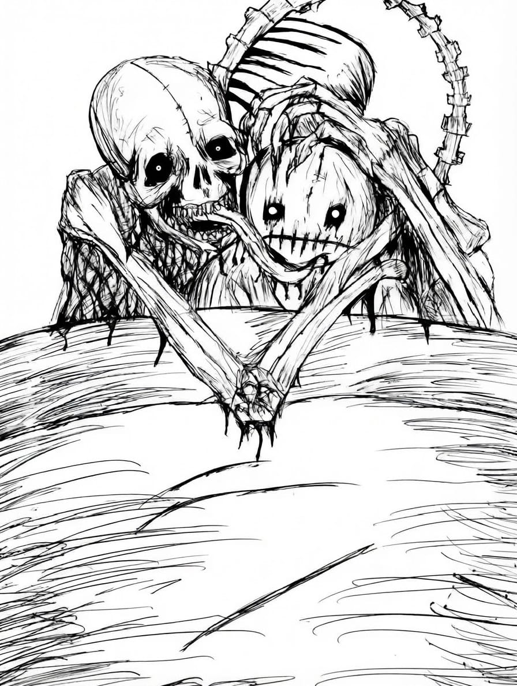

Lo que fue
“Qué bonito fue mientras duró.”

A veces pienso en aquellos días y me da un poco de risa todo lo que sentía, todo lo que imaginaba y todas esas cosas pequeñas que en ese momento parecían enormes.
Hoy lo veo diferente. No porque haya dejado de importar, sino porque aprendí a verlo de otra manera.
Fue una etapa bonita. Hubo canciones, conversaciones, caminatas y momentos que todavía recuerdo con cariño.
También hubo cosas que hice pensando en ti, detalles que en ese momento significaban mucho para mí.
Y creo que está bien. En ese momento quería hacerlo y lo hice porque me hacía feliz.
También hubo cosas que no salieron como esperaba. Hubo momentos que dolieron y otros que me costó entender.
Pero supongo que así es la vida. A veces algo cambia y uno tarda un poco en darse cuenta de que también tiene que cambiar.
Ahora estoy en otras cosas. Volví a hablar con mis amigos, a salir, a reírme con ellos y a recuperar algunas cosas que había dejado atrás.
Y de vez en cuando apareces en algún recuerdo. Una canción, algún lugar o hasta un peluche en una tienda XD.
Y sí, todavía me pega un poquito. Pero ya no como antes.
Ahora puedo sonreír y pensar:
“Qué bonito fue mientras duró.”
Y quizá eso es lo que más agradezco: que aunque nuestra historia terminó, mi vida siguió.
Todavía quedan canciones por escuchar, lugares por conocer y momentos por vivir.
Así que gracias por haber sido parte de una etapa que fue bonita mientras duró.
Me quedo con lo bueno, con lo que aprendí y con los recuerdos que valieron la pena.
Y ahora toca seguir.